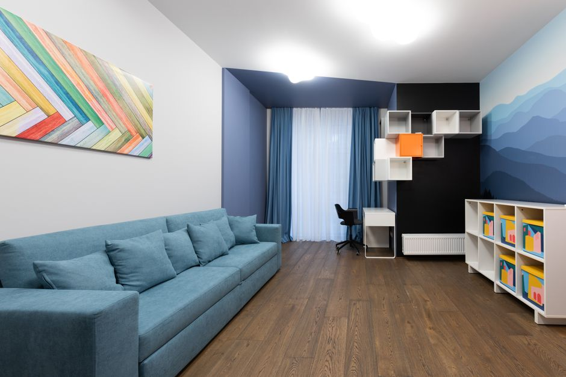

Comment utiliser des étagères mobiles pour maximiser l'espace
Photo: Yan Krukau / Pexels
Optimiser votre espace avec des étagères mobiles
Découvrez comment utiliser efficacement des étagères mobiles pour maximiser votre espace en petit espace, tout en gardant un rangement organisé et facile à gérer. Ces astuces concrètes vous permettront d'harmoniser fonctionnalité et esthétique.
Organisez vos vêtements de manière dynamique
Photo: Vlada Karpovich / Pexels
Imaginez-vous avoir une étagère mobile sur roulettes installée à l'entrée de votre placard. Placez-la pour que les vêtements soient accessibles et repliez-les ensuite à mesure que vous quittez la maison. Cette pratique, que vous pouvez mettre en place deux fois par semaine, assure un espace de rangement dynamique. Vous pouvez aussi installer une étagère mobile supplémentaire sur une cloison ou un mur, à 1,20 mètre du sol, pour stocker des baskets et des chaussures d'hiver.
Créer une zone de rangement flexible

Photo: Max Vakhtbovych / Pexels
Utilisez une étagère mobile pour délimiter des zones de rangement dans un bureau ou une cuisine. Positionnez-la à 1,2 mètre du sol pour des accessoires de bureau ou des ustensiles de cuisine. Vous pouvez ainsi ranger une poubelle de compost sous la table à manger en déplaçant l'étagère mobile de manière à ne pas gêner la circulation.
Organisez votre bibliothèque
Pour optimiser votre bibliothèque, placez des étagères mobiles entre vos livres. Fixez-les à 1,30 mètre du sol pour accéder aux ouvrages les plus lus et 2,10 mètre pour ceux que vous consultez moins souvent. Ainsi, vous pouvez réorganiser votre bibliothèque régulièrement, par exemple une fois par mois, pour toujours avoir un accès facile aux documents importants.
Sécurisez votre stockage de produits d'entretien
Placez des étagères mobiles sous votre lavabo pour stocker vos produits d'entretien. Installez-les à 1,20 mètre du sol, ce qui permet un accès facile et sécurisé. Vous pouvez également fixer une étagère mobile en haut d'un mur en dessous des portes de rangement, à 2,10 mètre du sol, pour stocker des produits de jardinage que vous utilisez rarement.
Utilisez des étagères mobiles comme séparation intemporelle
Placer des étagères mobiles horizontalement entre les chambres d'enfants ou les pièces d'un appartement peut créer une séparation temporelle. Par exemple, placez une étagère mobile à 1,20 mètre du sol entre les lits d'un enfant et d'un adulte. Vous pouvez la fixer là pendant les vacances d'été pour créer un espace de jeu dédié, puis la déplacer pour laisser plus d'espace à l'arrivée des beaux jours.
Conclusion : L'Étagère Mobile comme Allié de l'Organisation
En utilisant des étagères mobiles, vous pouvez transformer votre petit espace en un lieu ordonné et fonctionnel. En suivant ces conseils, vous maximiserez votre espace de rangement, créerez des zones de rangement flexibles et organisées, et vous gagnerez en efficacité dans la gestion de votre espace personnel.
Produits recommandés
En tant que Partenaire Amazon, je réalise un bénéfice sur les achats remplissant les conditions requises.